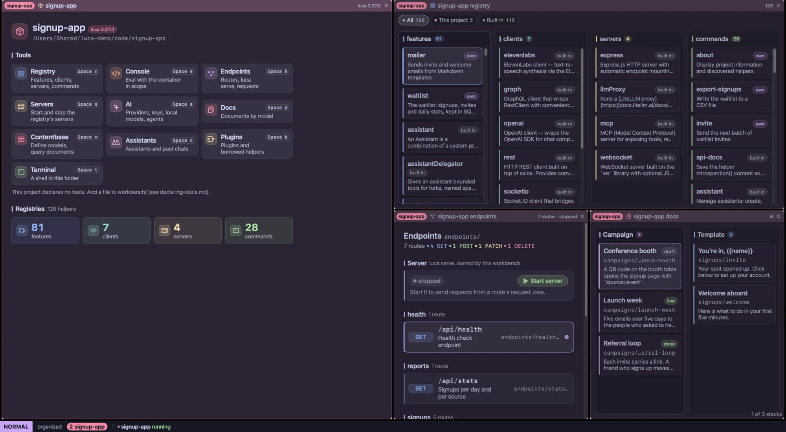
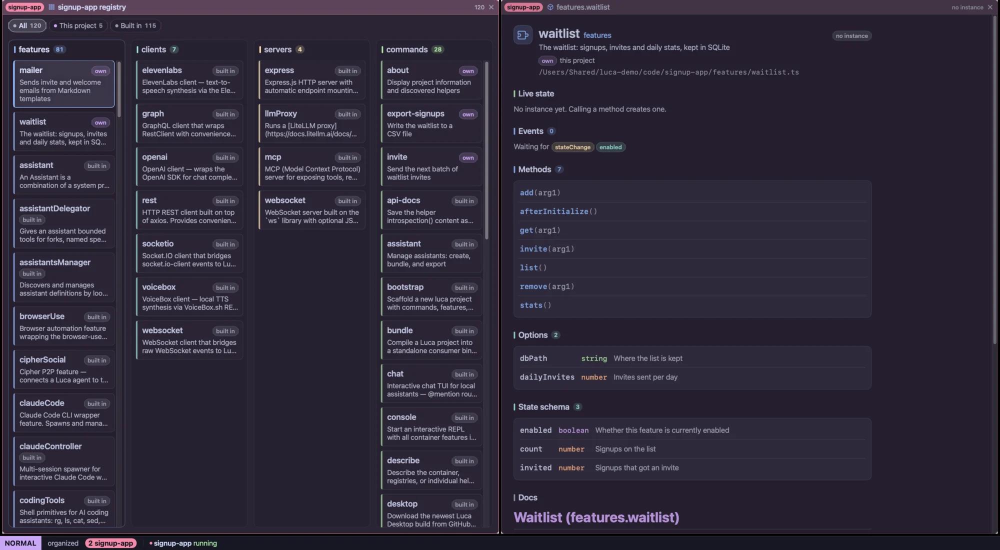
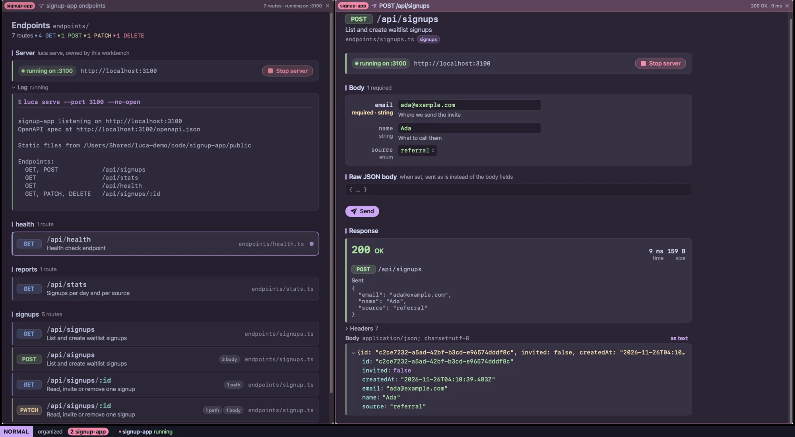
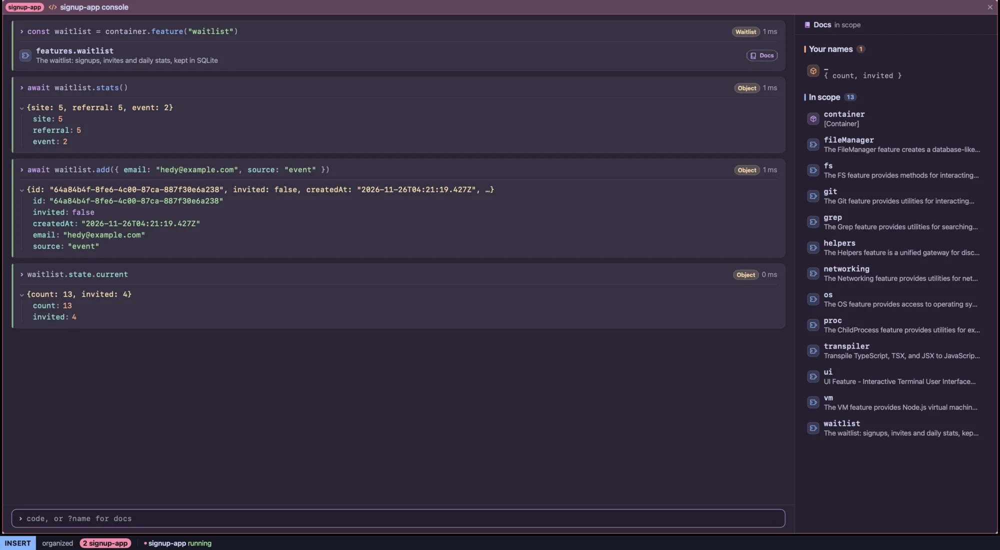
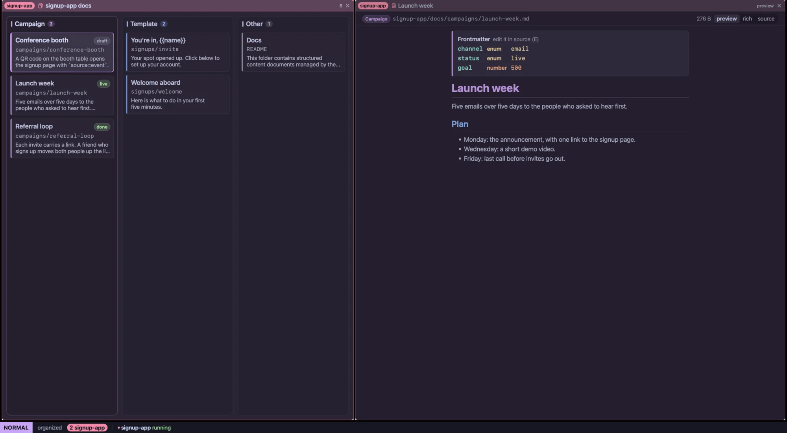
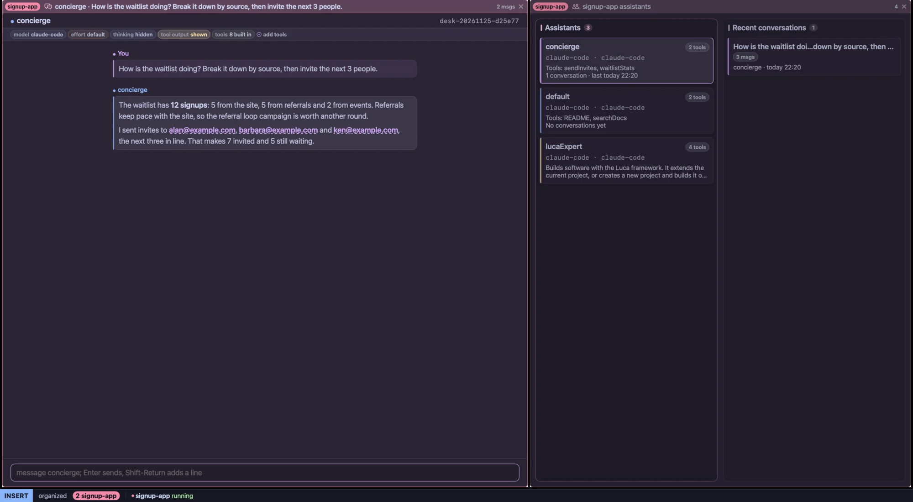
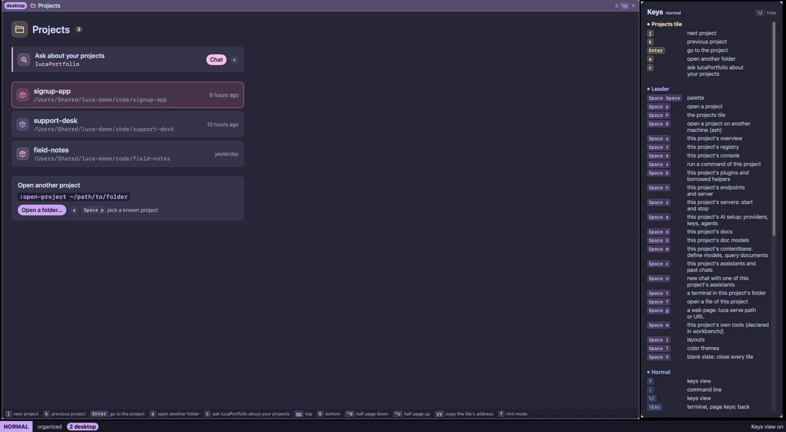
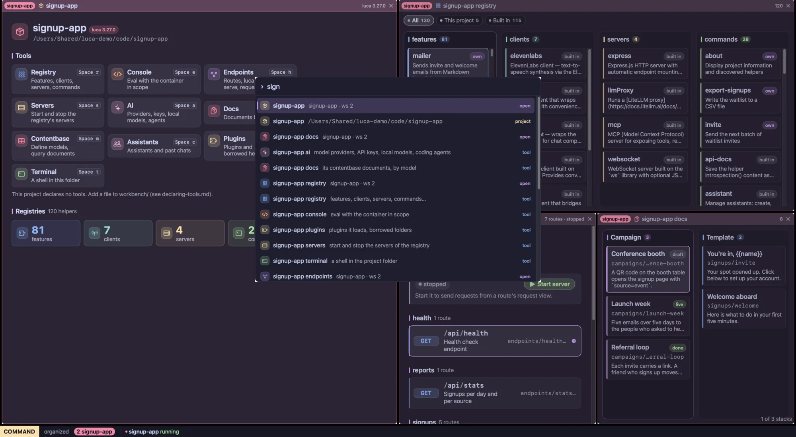

Luca Desktop is a keyboard-first workbench for any Luca project folder. See every helper, send requests to your endpoints, run code with the container in scope, edit your docs, and talk to the assistants inside.
luca desktop install --openmacOS 15.4 or later. Needs the luca CLI, version 3.27 or later.

A SwiftUI app that tiles like a window manager. Tiles open side by side, keep their place, and come back after a restart.
Leader keys, a palette, and a keys view that always shows what you can press. The mouse works too.
Each project runs its own luca workbench host. What you see is what your code loads, not a guess.
The registry shows every feature, client, server and command. Your own helpers and the built-in ones sit side by side, each marked by where it came from.
Open a helper to read its methods, options, state schema and docs. When it has an instance, its live state and events update as they happen.
luca describe

The endpoints tile reads endpoints/ the same way luca serve does, so the list matches what the server answers.
Start the server with one key. Its log streams in the tile.
Open a route to get a form built from its schema. Fill the fields, press r, and read the status, time, headers and body.
The console evaluates TypeScript inside your project's container. Top-level await works. Results open as a tree you can expand, and errors show their stack.
The side panel lists the names you made and everything in scope, each with its docs one key away.
?name to read a helper's docs

Luca keeps structured Markdown in docs/. The docs tile groups it by model, with status at a glance.
Open a document to read it, edit it in a rich editor, or switch to source.
Frontmatter shows as typed fields. A save that would overwrite a newer file stops and lets you choose.
Every assistant in your project is one key away. Replies stream in, with each tool call as it happens. Switch the model, effort, thinking and tool output from the chat bar.
Conversations are saved per project, so you can pick up where you left off.
lucaExpert, an assistant that builds with Luca

Each project gets its own workspace and its own host. Switch between them with a key. Open one on another machine over SSH.
Ask lucaPortfolio about all of them: which project has a Postgres feature, or which one already has the helper you need.
It can take a helper from one project into another. You review each change in its own tile before anything is written.
Press Space Space to find any project, tool, file or open tile. Leader keys open each tool directly.
The keys view lists every key for the tile in focus. Remap anything in keymap.yml. Save layouts, pick a color theme, and float or tile windows as you like.

The app draws. Your project does the work.
Point Luca Desktop at any Luca project. It remembers the folder and gives it a workspace.
The app runs luca workbench in that folder: a token-guarded HTTP and WebSocket API on 127.0.0.1, over the project's own container.
Every tile reads from the host and writes through it. The host listens only on your Mac. Close the last tile and it stops.
Get the luca CLI, then let it install the app. Signed and notarized by Apple.
curl -fsSL https://luca-js.soederpop.com/install.sh | bashluca desktop install --open
luca desktop check tells you when a newer build exists. Or download a build from
GitHub releases.